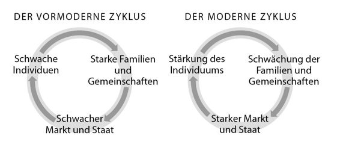

Kapitel 18
Eine permanente Revolution
Die Industrielle Revolution eröffnete ungeahnte Möglichkeiten der Energieumwandlung und der Warenproduktion und befreite die Menschheit weitgehend aus der Abhängigkeit von ihrer Umwelt. Die Menschen rodeten Wälder, legten Sümpfe trocken, zähmten Flüsse, fluteten Täler, verlegten Hunderttausende Kilometer Eisenbahnschienen und ließen Riesenstädte in den Himmel wachsen. Doch während der Homo sapiens seine Umwelt nach seinen Bedürfnissen gestaltete, wurden zahllose Lebensräume zerstört und ungezählte Arten ausgerottet. Unser einstmals blauer und grüner Planet verwandelt sich in eine Mischung aus Einkaufszentrum und städtischer Müllkippe.
Heute bevölkern sieben Milliarden Sapiens unseren Planeten. Wenn Sie alle Menschen auf eine riesige Waage stellen würden, kämen Sie auf rund 300 Millionen Tonnen. Wenn Sie alle Nutztiere – Kühe, Schweine, Schafe und Hühner – auf dieselben Waage stellen würden, kämen Sie auf etwa 700 Millionen Tonnen. Im Gegensatz dazu brächten die freilebenden Wirbeltiere – von Igeln und Spitzmäusen bis zu Elefanten und Walen – gerade einmal 100 Millionen Tonnen auf die Waage. In unseren Kinderbüchern und auf unseren Fernsehschirmen wimmelt es nur so vor Giraffen, Wölfen und Schimpansen, doch in der wirklichen Welt gibt es kaum noch Wildtiere. Auf dem ganzen Planeten leben heute noch 80000 Giraffen, verglichen mit 1,5 Milliarden Rindern; 200000 Wölfe, verglichen mit 400 Millionen Haushunden; und 250000 Schimpansen, verglichen mit Abermilliarden Menschen.107 Die Menschheit hat sich die Erde tatsächlich untertan gemacht.
Umweltzerstörung sollte nicht mit Rohstoffknappheit verwechselt werden. Wie wir im vorigen Kapitel gesehen haben, stehen der Menschheit immer mehr Ressourcen zur Verfügung, und das wird sich vermutlich auch in Zukunft nicht ändern. Die Rohstoffsituation ist also vermutlich kein Grund für Weltuntergangsszenarien. Die Furcht vor der Umweltzerstörung ist dagegen umso berechtigter. In Zukunft könnte der Homo sapiens in Ressourcen schwimmen, während die meisten natürlichen Lebensräume vernichtet und die meisten Tier- und Pflanzenarten ausgestorben sind.
Die Umweltprobleme könnten auch das Überleben des Homo sapiens selbst gefährden. Die Erderwärmung, die schmelzenden Polkappen, der Anstieg der Meeresspiegel und die verbreitete Verschmutzung von Luft und Wasser könnten die Lebensbedingungen auf der Erde dramatisch verschlechtern, und in Zukunft könnte ein sich aufschaukelnder Wettlauf zwischen den menschlichen Möglichkeiten und den von Menschen verschuldeten Naturkatastrophen entstehen. Wenn wir unsere Macht nutzen, um die Naturgewalten zu bändigen und das Ökosystem nach unseren Wünschen und Vorstellungen zu manipulieren, kann dies immer mehr unbeabsichtigte und gefährliche Nebenwirkungen mit sich bringen. Diese lassen sich vermutlich nur durch noch drastischere Eingriffe in das Ökosystem kontrollieren, was wiederum noch schlimmeres Chaos verursacht.
Viele sprechen von einer »Zerstörung der Natur«. In Wirklichkeit handelt es sich jedoch nur um eine Veränderung. Die Natur selbst lässt sich nicht zerstören. Vor 65 Millionen Jahren löschte ein Meteorit die Dinosaurier aus, doch gleichzeitig machte er den Weg für die Säugetiere frei. Heute löscht die Menschheit zahlreiche Arten aus und könnte sich sogar selbst ein Grab schaufeln, doch anderen Arten kommt dies sehr entgegen. Ratten und Kakerlaken erleben beispielsweise ein Goldenes Zeitalter. Diese zähen Lebewesen würden selbst unter den rauchenden Trümmern des nuklearen Holocaust hervorkriechen und ihre DNA weitergeben. Vielleicht werden intelligente Ratten in 65 Millionen Jahren voller Dankbarkeit auf die Verheerungen zurückblicken, die wir Menschen heute anrichten, genau wie wir heute auf den Meteoriten zurückblicken, der die Dinosaurier ausradierte.
Bislang sind jedoch Ängste vor einem möglichen Aussterben der Menschheit verfrüht. Seit Beginn der Industriellen Revolution vermehrten sich die Sapiens wie nie zuvor. Im Jahr 1700 lebten rund 700 Millionen auf der Erde. Bis zum Jahr 1800 war diese Zahl auf 950 Millionen gestiegen. Bis zum Jahr 1900 hatte sie sich fast verdoppelt und betrug nun 1,6 Milliarden. Und im Jahr 2000 hatte sie sich auf 6 Milliarden vervierfacht. Heute leben rund 7 Milliarden Menschen auf unserem Planeten.
Moderne Zeiten
Während sich die Sapiens von den Launen der Natur befreien, unterwerfen sie sich zunehmend dem Diktat der Industrie und des modernen Staates. Mit der Industriellen Revolution begann eine Zeit immer neuer gesellschaftlicher Experimente und ungeahnter Umwälzungen des Alltagslebens und der Mentalität der Menschen. Ein Beispiel von vielen ist die Verdrängung der natürlichen jahreszeitlichen Rhythmen, wie sie die traditionelle Landwirtschaft beherrschten, durch die ewig gleichförmigen und vom Sekundenzeiger getakteten Zeitpläne der Industrie.
Traditionelle landwirtschaftliche Gesellschaften lebten nach den Tageszeiten und den jahreszeitlichen Wachstumszyklen. Sie kannten keine präzise Zeitmessung und brauchten sie auch nicht. Die Menschen gingen ihren Arbeiten auch ohne Uhren und Zeitpläne nach und richteten sich nur nach der Sonne und den Wachstumskreisläufen der Pflanzen. Es gab keinen festgelegten Arbeitstag, und die Abläufe unterschieden sich je nach Jahreszeit erheblich. Die Menschen wussten, wo die Sonne stand und warteten ungeduldig auf die Zeichen für den Frühlings- oder Herbstanfang, aber sie interessierten sich nicht für die Uhrzeit und wussten nicht, in welchem Jahr sie lebten. Wenn ein Zeitreisender in ein mittelalterliches Dorf käme und einen Passanten fragen würde: »In welchem Jahr befinden wir uns?«, dann würde sich der Dörfler über diese sinnlose Frage des Fremden vermutlich genauso wundern wie über seine alberne Kleidung.
Im Gegensatz zu den Bauern und Schustern des Mittelalters schert sich die moderne Industrie nicht um den Stand der Sonne oder um die Jahreszeiten, sondern besteht auf Präzision und Einheitlichkeit. In einem mittelalterlichen Schusterbetrieb stellte ein Schuhmacher einen ganzen Schuh her, von der Sohle bis zur Schnalle. Wenn einer der Schuhmachergesellen später zur Arbeit erschien, dann hatte das keine Auswirkungen auf die Arbeit seiner Kollegen. Aber in einer modernen Fließbandproduktion bedient jeder Arbeiter eine Maschine, die nur einen kleinen Teil des Schuhs herstellt, der dann an eine andere Maschine weitergereicht wird. Wenn der Arbeiter an Maschine 5 verschläft, kommen alle anderen Maschinen zum Stillstand. Um Ausfälle wie diese zu verhindern, müssen sich alle an einen exakten Zeitplan halten. Alle Arbeiter erscheinen zur gleichen Zeit am Arbeitsplatz. Sie nehmen alle zur gleichen Zeit ihr Mittagessen ein, ob sie hungrig sind oder nicht. Und alle gehen nach Hause, wenn die Sirene das Ende der Schicht verkündet, und nicht, wenn sie ihren Schuh fertiggestellt haben.
Die Industrielle Revolution hat die Uhr und das Fließband zur Schablone fast aller menschlicher Tätigkeiten gemacht. Kaum hatten die Fabriken dem menschlichen Verhalten ihre präzisen Zeitpläne aufgezwungen, tickten auch Schulen, Krankenhäuser, Behörden und Lebensmittelläden im gleichen Takt. Selbst Aktivitäten, die gar nichts mit Fließbändern und Maschinen zu tun haben, unterwarfen sich der Uhr. Wenn in einer Fabrik um 17:00 Uhr die Schicht zu Ende geht, dann sollte die Kneipe gegenüber spätestens um 17:02 Uhr geöffnet sein.
Ein entscheidender Motor bei der Verbreitung der Zeitpläne waren übrigens die öffentlichen Verkehrsmittel. Wenn die Schicht um 8:00 Uhr beginnt, sollte der Bus oder Zug um spätestens 7:55 Uhr vor dem Werkstor stehen. Wenn er auch nur ein paar Minuten zu spät kommt, steht das Fließband still und einige Arbeiter verlieren ihre Arbeit. Im Jahr 1784 wurde in Großbritannien der erste Kutschdienst mit Fahrplan eingerichtet. Der Fahrplan gab nur die Abfahrtszeiten an, nicht aber die Ankunftszeiten. Damals hatte jeder Ort der Insel seine eigene Zeit, die bis zu einer halben Stunde von der Zeit in London abweichen konnte. Wenn es in der Hauptstadt 12:00 Uhr war, dann konnte es in Liverpool 12:20 Uhr sein und in Canterbury 11:50 Uhr. Da es keine Telefone, kein Radio, kein Fernsehen und keine Schnellzüge gab, konnte das aber niemand wissen, und im Grunde spielte es auch keine Rolle.108
Im Jahr 1830 nahm der erste Personenzug zwischen Liverpool und Manchester seinen Betrieb auf. Zehn Jahre später hatte Großbritannien seinen ersten Zugfahrplan. Da die Züge sehr viel schneller waren als die Pferdekutschen, wurden die regionalen Zeitunterschiede zum Ärgernis. Im Jahr 1847 einigten sich die verschiedenen Eisenbahngesellschaften daher darauf, ihre Fahrpläne nach der Greenwich Time auszurichten und nicht nach den regionalen Uhrzeiten von Liverpool, Manchester oder Glasgow. Immer mehr Einrichtungen schlossen sich den Eisenbahnern an, und im Jahr 1880 unternahm die britische Regierung einen beispiellosen Schritt: Sie schrieb vor, dass von nun an alle Uhren nach der Greenwich Time zu ticken hatten. Erstmals in der Geschichte führte ein Land eine einheitliche Zeitmessung ein und zwang seine Bevölkerung, nach einer künstlichen Uhrzeit zu leben, und nicht nach der örtlichen Turmuhr oder der Sonne.
Dies war der bescheidene Anfang eines weltumspannenden Netzwerks von Zeitplänen, die bis auf Sekundenbruchteile aufeinander abgestimmt sind. Als die Rundfunkmedien Radio und Fernsehen auf den Plan traten, fügten sie sich begeistert in diese Welt der Zeitpläne ein und wurden ihr wichtigster Prediger. Mit das Erste, was Radiostationen sendeten, waren Zeitsignale, nach denen entlegene Ortschaften und Schiffe auf hoher See ihre Uhren stellen konnten. Später strahlten Radiosender zu jeder vollen Stunde die Nachrichten aus. Heute ist die erste Meldung jeder Nachrichtensendung die Zeit, die damit noch wichtiger ist als jeder Kriegsausbruch. Während des Zweiten Weltkriegs übertrug die BBC ihre Nachrichten auch in das von den Nationalsozialisten besetzte Europa. Jede Sendung begann mit einer Live-Übertragung von Big Ben, der die Stunde schlug – der magische Klang der Freiheit. Gewiefte deutsche Physiker fanden eine Möglichkeit, anhand winziger Unterschied im übertragenen Glockenton das Wetter in London zu ermitteln, eine Information, die für die Luftwaffe von unschätzbarem Wert war. Als der britische Geheimdienst dahinterkam, ersetzte die BBC die Live-Übertragung durch eine Tonbandaufnahme der berühmten Glocken.
Um das System der Zeitpläne aufrechtzuerhalten, verbreiteten sich billige, aber präzise tragbare Uhren. In den Städten der Assyrer, Perser oder Inkas gab es kaum Zeitmesser. Die Städte des späten Mittelalters hatten in der Regel eine einzige Turmuhr auf dem Marktplatz. Diese Uhren gingen zwar falsch, aber da sie die einzigen weit und breit waren, machte dies nichts aus. Heute hat eine typische westliche Familie mehr Uhren als so manches mittelalterliche Land. Wenn Sie wissen wollen, was die Stunde geschlagen hat, können Sie auf Ihre Armbanduhr, Ihr Handy, den Wecker neben Ihrem Bett, die Küchenuhr, den Mikrowellenherd, den Fernseher, den DVD-Spieler oder die Uhr in der Task-Leiste Ihres Computerbildschirms schauen. Sie müssen sich schon sehr anstrengen, wenn Sie nicht wissen wollen, wie spät es ist.
Wir sehen täglich Dutzende Male auf die Uhr, denn fast jede unserer Tätigkeiten wird von ihr bestimmt. Der Wecker weckt uns um 7:00 Uhr, wir wärmen die Milch für unsere Cornflakes genau 80 Sekunden lang im Mikrowellenherd, putzen uns exakt drei Minuten lang die Zähne, bis die elektrische Zahnbürste piept, und nehmen den Zug um 7:40 Uhr zur Arbeit. Nach der Arbeit laufen wir im Fitnessstudio eine halbe Stunde auf dem Laufband. Um 19:00 Uhr setzen wir uns vor den Fernseher, um unsere Lieblingssendung zu sehen, die in bestimmten Abständen von Werbespots unterbrochen wird, die pro Sekunde 1000 Euro kosten, und klagen schließlich bei unserem Therapeuten über diesen ganzen Zeitdruck – genau 45 Minuten lang.
*
Die Industrielle Revolution hat uns Dutzende bedeutender Umwälzungen beschert, die unsere gesamte menschliche Gesellschaft vollkommen umgekrempelt haben. Die Unterwerfung unter den gleichförmigen Takt der Industrie ist nur eine. Andere Beispiele sind die Verstädterung, das Aussterben der Landbevölkerung, die zunehmende Zahl der Industriearbeiter, der Machtgewinn des gewöhnlichen Menschen, die Demokratisierung, die Jugendkultur und der Niedergang des Patriarchats.
Doch all diese Umwälzungen sind nichts im Vergleich mit der folgenschwersten gesellschaftlichen Revolution aller Zeiten: dem Verschwinden der Familie und der Gemeinschaft und ihre Verdrängung durch den Staat und den Markt. Nach allem was wir heute wissen, lebten Menschen schon vor mehr als einer Million Jahren in kleinen, intimen Gemeinschaften, deren Angehörige überwiegend miteinander verwandt waren. Daran änderten auch die kognitive und die landwirtschaftliche Revolution nichts. Diese beiden Revolutionen vereinten Familien und Gemeinschaften zu Stämmen, Städten, Königreichen und Imperien. Doch diese Zusammenführung ließ Familien und Gemeinschaften intakt. Sie waren nach wie vor der Grundbaustein aller menschlichen Gesellschaften. Doch die Industrielle Revolution schaffte es in weniger als zwei Jahrhunderten, diese Bausteine zu zerschlagen und in ihre Atome aufzulösen. Die meisten der traditionellen Funktionen der Familien und Gemeinschaften wurden an den Staat und die Märkte abgegeben.
Das Ende der Familien und Gemeinschaften
Vor der Industriellen Revolution verlief der Alltag der meisten Menschen überwiegend in drei uralten Kreisen: der Kernfamilie, der erweiterten Familie und der intimen Gemeinschaft.109 Die meisten arbeiteten in Familienunternehmen, zum Beispiel dem landwirtschaftlichen oder handwerklichen Betrieb der Familie. Oder sie arbeiteten im Familienbetrieb eines Nachbarn. Außerdem war die Familie soziales Netz, Gesundheitswesen, Versicherungsgesellschaft, Radio, Fernsehen, Zeitung, Bank und sogar Polizei in einem.
Wenn jemand krank wurde, versorgte ihn die Familie. Wenn jemand alt wurde, sprang die Familie ein, und die Kinder waren die Rentenversicherung. Wenn jemand starb, kümmerten sich die Angehörigen um die Waisen. Wenn jemand eine Hütte bauen wollte, halfen die Familienmitglieder. Wenn jemand ein Unternehmen gründen wollte, trieb die Familie das Geld auf. Wenn jemand heiraten wollte, wählte die Familie den Partner oder prüfte ihn zumindest auf Herz und Nieren. Wenn es Streit mit dem Nachbarn gab, machte sich die Familie stark. Und wenn jemand so krank wurde, dass die Familie allein nicht mehr damit fertig wurde, wenn ein Unternehmen eine große Investition benötigte oder wenn Nachbarschaftsstreitigkeiten in Gewalt ausarteten, kam die Gemeinschaft zu Hilfe.
Die Gemeinschaft half ganz nach ihren eigenen Gepflogenheiten und einer »Gefälligkeitswirtschaft«, die wenig mit der Marktwirtschaft und den Gesetzen von Angebot und Nachfrage zu tun hatte. Wenn Sie in einer mittelalterlichen Gemeinschaft leben würden und Ihr Nachbar Hilfe benötigte, dann würden Sie ihm helfen, seine Hütte zu bauen und seine Schafe zu hüten, ohne dafür eine Bezahlung zu erwarten. Und wenn Sie Hilfe benötigten, dann würde Ihr Nachbar einspringen. Gleichzeitig konnte der Burgherr das ganze Dorf dazu zwingen, ihm beim Bau seiner Festung zu helfen, ohne Ihnen auch nur einen Kreuzer dafür zu zahlen. Im Gegenzug konnten Sie sich darauf verlassen, dass er Sie vor Räubern und Barbaren schützte. Im Alltag des Dorfs wurden viele Geschäfte getätigt, aber bei den wenigsten war Geld im Spiel. Natürlich gab es Märkte, doch die spielten eine eher untergeordnete Rolle. Dort konnte man seltene Gewürze, Stoffe und Werkzeuge kaufen oder einen Anwalt oder Arzt aufsuchen. Doch weniger als 10 Prozent der alltäglichen Güter und Dienstleistungen wurden auf dem Markt erworben. Die meisten Bedürfnisse wurden von der Familie und der Gemeinschaft befriedigt.
Daneben gab es Königreiche und Imperien, die sich um so wichtige Aufgaben wie die Kriegsführung und den Bau von Straßen und Palästen kümmerten. Dazu erhoben sie Steuern und zwangen die Bauern gelegentlich zum Kriegs- oder Arbeitsdienst. Von wenigen Ausnahmen abgesehen, hielten sie ihre Nase aus den Angelegenheiten der Familien und Gemeinschaften heraus. Selbst wenn sich die Herrschenden einmischen wollten, war dies keine einfache Sache. Traditionelle landwirtschaftliche Gesellschaften erzeugten kaum Überschüsse, mit denen Beamte, Polizeikräfte, Sozialarbeiter, Lehrer und Ärzte bezahlt werden konnten. Daher richteten die wenigsten Herrscher Polizei, Krankenhäuser oder Schulen ein. Das überließen sie vielmehr den Familien und Gemeinschaften. Selbst in den wenigen Fällen, in denen die Herrschenden direkter in den Alltag der Bauern eingreifen wollten (wie die Kaiser der chinesischen Qin-Dynastie), ernannten sie kurzerhand die Familienoberhäupter und Dorfältesten zu Beamten.
Oft erschwerten Transport- und Kommunikationsprobleme die Kontrolle abgelegener Gemeinschaften, weshalb viele Herrscher selbst Privilegien wie die Besteuerung und das Gewaltmonopol an diese Gemeinschaften abtraten. So ließ sich die Obrigkeit des Osmanischen Reichs die Polizeiarbeit von Blutfehden abnehmen. Wenn Ihr Cousin jemanden umbrachte, dann konnte der Bruder des Opfers Sie töten, ohne dass der kurze Arm des Gesetzes eingriff. Weder der Sultan im fernen Istanbul noch der Pascha Ihrer Provinz schritten bei solchen Auseinandersetzungen ein, solange sich die Gewalt in annehmbaren Grenzen hielt.
Unter der chinesischen Ming-Dynastie (1368 –1644) hatten die Gemeinschaften auch erhebliche Freiräume bei der Besteuerung. Eine verbreitete Besteuerungsmethode war, die Summe, die eine bestimmte Provinz zu entrichten hatte, von vornherein festzulegen, und diese Summe dann auf die verschiedenen Dörfer und Städte zu verteilen. Ein Dorf mussten beispielsweise 100 Silberstücke bezahlen, ein anderes 200. Die Beamten des Kaisers stiegen nicht jedem Untertan nach und interessierten sich nicht dafür, wer wie viel verdiente. Deswegen konnte es passieren, dass in einem Dorf die reichste Familie die ganze Summe übernahm, während in einem anderen die Ärmsten gezwungen wurden, die Rechnung zu begleichen, und in einem dritten Dorf die Summe unabhängig vom Einkommen gleichmäßig auf alle Familien verteilt wurde. Aus Sicht der Herrschenden hatte dieses System einen großen Vorteil. Sie mussten keinen riesigen Apparat von Finanzbeamten und Steuereintreibern unterhalten, um die Einnahmen und Ausgaben jeder einzelnen Familie nachzuzählen, denn diese Aufgabe übernahmen die Dorfältesten. Die wussten sehr genau, was jeder Dorfbewohner verdiente, und konnten die Zahlungen erzwingen, ohne die kaiserliche Armee zu bemühen.
Viele Königreiche und Imperien waren im Grunde nichts anderes als Systeme zur Schutzgelderpressung. Der König war der Pate aller Paten, der die Schutzgelder kassierte und im Gegenzug garantierte, dass die Zahler nicht von der örtlichen Mafia und den Verbrechersyndikaten der Nachbarschaft behelligt wurden. Mehr taten sie nicht.
Das Leben im Schoß der Familie war natürlich alles andere als idyllisch. Familien und Gemeinschaften konnten ihre Angehörigen genauso brutal unterdrücken wie moderne Staaten und Märkte, und ihre innere Dynamik war oft durch Spannung und Gewalt gekennzeichnet. Doch die Menschen hatten keine andere Wahl. Wer seine Familie verlor oder aus der Gemeinschaft ausgeschlossen wurde, war so gut wie tot. Das war noch im Jahr 1750 so. Wer keine Familie oder Gemeinschaft hatte, bekam keine Arbeit, keine Bildung, keinen Kredit und keine Absicherung in Zeiten von Krankheit und Hunger. Es gab keine Polizei, keine Sozialarbeiter, kein staatliches Bildungswesen und keine Schulpflicht. Um zu überleben, musste dieser Mensch schnellstens eine neue Familie oder Gemeinschaft finden. Jungen und Mädchen, die von zu Hause wegliefen, konnten bestenfalls darauf hoffen, in einer anderen Familie als Knechte und Mägde arbeiten zu dürfen. Im schlimmsten Fall endeten sie in der Armee oder in einem Bordell.
*
In den letzten zweihundert Jahren änderte sich dies dramatisch. Die Industrielle Revolution verlieh dem Markt gewaltige neue Kräfte, gab dem Staat neue Kommunikations- und Transportmittel an die Hand und stellte der Regierung ein Heer von Beamten, Lehrern, Polizisten und Sozialarbeitern zur Verfügung. Doch beim Einsatz dieser neuen Kräfte standen dem Markt und dem Staat die traditionellen Familien und Gemeinschaften im Weg, die wenig für Einmischung von außen übrig hatten. Staat und Markt hatten ihre Schwierigkeiten, mit ihren Gesetzen und wirtschaftlichen Interessen in den Alltag einer solidarischen Dorfgemeinschaft oder einer Familie mit starkem Zusammenhalt vorzudringen. Eltern und Dorfälteste wehrten sich dagegen, dass die jüngere Generation von nationalistischen Bildungssystemen indoktriniert, von der Armee eingezogen oder einem entwurzelten städtischen Proletariat zugeführt werden sollte.
Um diese Hindernisse zu beseitigen, mussten Staat und Markt die traditionellen Gemeinschafts- und Familienbande aufbrechen. Der Staat schickte seine Polizisten, um Blutfehden zu unterbinden und durch Gerichtsverfahren zu ersetzen. Der Markt schickte seine Händler, um die althergebrachten Traditionen zu zerstören und durch ständig wechselnde Moden zu ersetzen. Doch das reichte noch nicht aus. Um die Macht der Familie und der Gemeinschaft zu brechen, benötigten sie die Unterstützung einer fünften Kolonne.
Also lockten Staat und Markt die Menschen mit einer Verheißung, der sie nicht widerstehen konnten. »Du kannst ein freier Menschen werden«, versprachen sie. »Du kannst heiraten, wen du möchtest, ohne deine Eltern um Erlaubnis fragen zu müssen. Du kannst jede Arbeit annehmen, die dir gefällt, auch wenn es den Dorfältesten nicht passt. Du kannst leben, wo immer du willst, auch wenn du nicht jeden Sonntag zum großen Familienessen nach Hause kommen kannst. Du bist nicht länger von deiner Familie und deiner Gemeinschaft abhängig. Wir, der Staat und der Markt, kümmern uns schon um dich. Wir geben dir Essen, Kleidung, ein Dach über dem Kopf, Bildung, Gesundheit, Arbeit und soziale Sicherheit.«
In der romantischen Literatur erscheint das Individuum oft als jemand, der sich Staat und Markt widersetzt. Mit der Wirklichkeit hat dies nichts zu tun. Staat und Markt sind Vater und Mutter des Individuums, und das Individuum kann nur dank ihrer Hilfe überleben. Der Markt bietet Arbeit, der Staat ein soziales Netz und Pension. Wenn wir studieren wollen, sind die staatlichen Schulen und Universitäten für uns da. Wenn wir ein Unternehmen gründen wollen, geben uns die Banken Kredit. Wenn wir ein Haus bauen wollen, beauftragen wir ein Bauunternehmen und nehmen auf der Bank eine Hypothek auf, die vom Staat garantiert wird. Wenn es zu Gewalt und Ausschreitungen kommt, schützt uns die Polizei. Wenn wir ein paar Tage krank sind, übernimmt die Krankenversicherung die Arztkosten. Wenn wir monatelang arbeitsunfähig sind, springt die Sozialversicherung ein. Wenn wir rund um die Uhr gepflegt werden müssen, suchen wir auf dem Arbeitsmarkt eine Pflegekraft – in der Regel eine Fremde aus einem anderen Land, die uns mit einer Hingabe versorgt, die wir von unseren eigenen Kindern nicht mehr erwarten. Wenn wir die Mittel dazu haben, können wir unsere besten Jahre in einem Altenwohnheim verbringen. Das Finanzamt behandelt uns als Individuen und geht nicht davon aus, dass wir die Steuern unseres Nachbarn bezahlen. Auch die Gerichte behandeln uns als Individuen und bestrafen uns nicht für etwas, das unser Cousin verbrochen hat.
Nicht nur erwachsene Männer, sondern auch Frauen und Kinder werden als Individuen anerkannt. In der Vergangenheit galten Frauen oft als Eigentum der Familie oder der Gemeinschaft. In modernen Staaten gelten Frauen jedoch zunehmend als Individuen, die unabhängig von der Familie und der Gemeinschaft wirtschaftliche Freiheiten und Rechte genießen. Sie können über ihr eigenes Bankkonto verfügen, ihre Partner frei wählen und sich sogar scheiden lassen oder allein leben.
Dieser Individualismus fordert jedoch seinen Tribut. Er hat Familie und Gemeinschaft geschwächt und Staat und Markt gestärkt. Letztere können leichter in unser Leben eingreifen, wenn wir nicht mehr starken Familien und Gemeinschaften angehören, sondern vereinzelt und entfremdet leben. Wenn sich die Nachbarn in einem Mietshaus nicht einmal darauf einigen können, wie viel sie einem Hausmeister bezahlen wollen, wie sollen sie sich dann dem Staat widersetzen?

Dieser Handel zwischen Staaten, Märkten und Individuen ist oft unbefriedigend. Staat und Markt können sich nicht auf ihre Rechte und Pflichten einigen, und die Individuen beklagen, dass beide zu viel verlangen und zu wenig bieten. Oft werden die Individuen von den Märkten ausgebeutet, und Staaten setzen ihre Armeen, Polizeikräfte und Behörden ein, um die Individuen zu verfolgen, statt sie zu beschützen. Trotz aller Mängel und Schwächen funktioniert der Handel. Erstaunlicherweise, denn er verstößt gegen eine gesellschaftliche Ordnung, die seit undenklichen Zeiten Bestand hatte, und läuft sogar der menschlichen Evolution zuwider. Über Jahrmillionen hinweg haben wir gelernt, als Angehörige einer Gemeinschaft zu denken. Innerhalb von nur zwei Jahrhunderten haben wir uns in entfremdete Einzelwesen verwandelt. Es gibt wohl kaum einen besseren Beweis für die Macht der Kultur.
*
Die Kernfamilie verschwand allerdings nicht völlig aus der modernen Landschaft. Als Staaten und Märkte der Familie ihre wirtschaftliche und politische Rolle weitgehend nahmen, ließen sie ihr einige wichtige emotionale Funktionen. Die moderne Familie soll nach wie vor die intimen Bedürfnisse befriedigen, die Staat und Markt (bislang) nicht abdecken können. Doch auch die Kernfamilie ist zunehmend Einmischungen von außen ausgesetzt. Der Markt greift immer mehr in die Gestaltung unseres Liebes- und Sexuallebens ein. Während früher die Familie die wichtigste Partnervermittlung war, übernimmt diese Rolle heute der Markt, indem er erst unsere sexuellen Wünsche prägt und uns dann hilft, sie zu erfüllen – gegen eine happige Gebühr, versteht sich. Früher lernten sich Braut und Bräutigam im elterlichen Wohnzimmer kennen, und das Geld wanderte von der Hand des einen Vaters in die des anderen. Heute spielen sich die Paarungsrituale im Café ab, und das Geld wandert von der Hand des hoffnungsfrohen Paars in die Schürze der Kellnerin.
Auch der Staat nimmt die familiären Beziehungen immer stärker unter die Lupe, vor allem die Beziehungen zwischen Eltern und Kindern. Eltern müssen ihre Kinder auf eine Schule schicken, auf der sie vom Staat erzogen werden. Eltern, die ihre Kinder körperlich oder psychisch misshandeln, können vom Staat gemaßregelt werden. Notfalls kann der Staat die Eltern sogar einsperren und die Kinder in eine Pflegefamilie geben. Früher wäre allein der Gedanke, dass der Staat die Eltern daran hindern sollte, ihre Kinder zu schlagen, vollkommen absurd erschienen. Respekt und Gehorsam gegenüber den Eltern galten lange als oberste Tugenden. Die Eltern konnten tun und lassen, was sie wollten, sie konnten ihre Neugeborenen töten, ihre Kinder in die Sklaverei verkaufen und ihre Töchter mit steinalten Männern verheiraten.
Heute befindet sich die Autorität der Eltern jedoch überall auf dem Rückzug. Neue Lebensweisheiten, Psychotherapeuten und Gesetzgeber entbinden Kinder heute der Gehorsamspflicht gegenüber ihren Eltern, und so mancher Fünfzigjährige sucht die Schuld für das eigene Versagen und Fehlverhalten bei den Eltern. Vor dem Freudschen Tribunal haben Mama und Papa genauso gute Aussichten auf einen Freispruch wie die Angeklagten in einem stalinistischen Schauprozess.
Erfundene Gemeinschaften
Ähnlich wie die Kernfamilie ist auch die Gemeinschaft nicht gänzlich aus unserem Leben verschwunden. Da sich der Mensch über Jahrmillionen hinweg als Herdentier mit dem Bedürfnis nach Stammesbeziehungen entwickelt hatte, konnte die Gemeinschaft nicht einfach verschwinden, ohne dass ein emotionaler Ersatz an ihre Stelle trat. Markt und Staat befriedigen heute die meisten materiellen Bedürfnisse, die einst die Gemeinschaft übernahm, aber sie müssen auch das Bedürfnis nach Zugehörigkeit bedienen.
Das tun sie durch »erfundene Gemeinschaften«, die aus Millionen von Menschen bestehen und perfekt auf die Anforderungen von Markt und Staat zugeschnitten sind. Dabei handelt es sich um Gemeinschaften, deren Angehörige einander nicht kennen, sich aber zu kennen glauben. Königreiche, Imperien und Religionen funktionierten schon seit Jahrtausenden als erfundene Gemeinschaften. Abermillionen von Chinesen sahen sich als Angehörige einer einzigen Familie, deren Vater der Kaiser war. Abermillionen gläubiger Muslime stellten sich vor, sie seien alle Brüder und Schwestern in der großen Gemeinschaft des Islam. Doch in der Vergangenheit spielten diese erfundenen Gemeinschaft immer nur die zweite Geige, viel wichtiger waren die intimen Beziehungen in kleinen Gruppen von Menschen, die einander gut kannten. Diese kleinen Gemeinschaften befriedigten die emotionalen Bedürfnisse ihrer Angehörigen und waren entscheidend für das Überleben und Wohlergehen aller. In den letzten zwei Jahrhunderten sind diese intimen Gemeinschaften verschwunden, und in die emotionale Lücke sprangen die erfundenen Gemeinschaften.
Die zwei wichtigsten Beispiele für den Aufstieg der erfundenen Gemeinschaften sind die »Nation« und die »Verbraucher«. Die Nation ist die erfundene Gemeinschaft des Staates. Die Verbraucher sind die erfundene Gemeinschaft des Marktes. Beide sind erfundene Gemeinschaften, weil sich die Teilnehmer des Marktes und die Angehörigen einer Nation natürlich nie alle kennenlernen können, so wie sich in der Vergangenheit die Bewohner eines Dorfs kannten. Kein Deutscher kann ein intimes Verhältnis zu den 80 Millionen deutschen Staatsbürgern unterhalten, geschweige denn zu den 500 Millionen Verbrauchern des Gemeinsamen Marktes der Europäischen Union.
Die Religionen des Konsumismus und Nationalismus arbeiten auf Hochtouren, um uns einzureden, dass wir mit Millionen von Unbekannten einer einzigen großen Gemeinschaft angehören und eine gemeinsame Vergangenheit, gemeinsame Interessen und eine gemeinsame Zukunft haben. Das ist keine Lüge, sondern lediglich ein Fantasieprodukt. Genau wie das Geld, Gesellschaften mit beschränkter Haftung und die Menschenrechte sind Nationen und Verbraucher intersubjektive Wirklichkeiten. Sie existieren zwar nur in unserer kollektiven Vorstellung, doch ihre Macht ist gewaltig. Solange Millionen von Deutschen an die Existenz der deutschen Nation glauben, sich mit deutschen Symbolen identifizieren, deutsche Mythen weitererzählen und bereit sind, Geld, Zeit und Gesundheit für diese Nation zu opfern, solange wird Deutschland eines der mächtigsten Länder der Welt bleiben.
Die Nation tut ihr Möglichstes, um zu verschleiern, dass sie lediglich ein Fantasieprodukt ist. Die meisten Nationen tun so, als seien sie ein natürliches und unsterbliches Wesen, das irgendwann in grauer Vorzeit entstand, als sich die Erde des Vaterlandes mit dem Blut der Menschen vermischte. Das sind natürlich Märchen. Nationen reichen zwar ein Stückchen in die Geschichte zurück, aber sie spielten nie eine wichtige Rolle, weil der Staat nie eine wichtige Rolle spielte. Es mag durchaus sein, dass eine Einwohnerin des mittelalterlichen Nürnberg schon einmal von der deutschen Nation gehört hatte, aber ihre Loyalität galt ihrer Familie und ihrer Gemeinschaft, die sich um ihre Bedürfnisse kümmerte. Aber egal wie wichtig oder unwichtig frühere Nationen auch gewesen sein mögen, die wenigsten haben überlebt. Die meisten modernen Nationen entstanden erst nach der Industriellen Revolution.
Dafür bietet der Nahe Osten zahlreiche Beispiele. Staaten wie Syrien, Jordanien, der Libanon oder der Irak sind das Produkt willkürlicher Linien, in den Sand gezogen von französischen und britischen Diplomaten, die von der Geschichte, Geographie und Wirtschaft der Region keine Ahnung hatten. Im Jahr 1918 beschlossen diese Diplomaten, dass die Einwohner von Kurdistan, Bagdad und Basra fortan »Iraker« zu sein hatten. Die Franzosen entschieden, wer Syrer wurde und wer Libanese. Saddam Hussein und Hafiz el-Assad taten ihr Bestes, auf diesem anglo-französischen Erbe aufzubauen, doch ihr bombastisches Gerede von den angeblich unsterblichen irakischen und syrischen Nationen klang hohl.
Natürlich lassen sich Nationen nicht einfach aus dem Nichts erschaffen. Die Gründer der irakischen und syrischen Nationen benutzten dazu historisches, geographisches und kulturelles Baumaterial, das Jahrhunderte oder Jahrtausende zurückreicht. Saddam Hussein griff in die Kiste des Abbasidenkalifats und des Babylonischen Reichs und gab einer seiner Eliteeinheiten sogar den Namen »Hammurabi-Division«. Aber das machte den modernen irakischen Staat noch nicht zu einer Jahrtausende alten Einrichtung. Wenn ich in meinem Küchenschrank Mehl, Öl und Zucker finde, die dort schon seit undenklichen Zeiten herumliegen, und daraus einen Kuchen backe, dann ist der Kuchen selbst nicht uralt.
In den vergangenen Jahrzehnten stehen die nationalen Gemeinschaften zunehmend im Schatten von Verbrauchergruppen, die einander nicht kennen, aber dieselben Konsumgewohnheiten und Interessen haben und sich selbst als Angehörige einer Gemeinschaft wahrnehmen und sogar so definieren. So sonderbar das klingen mag, wenn Sie sich umsehen, finden Sie überall Beispiele dafür. Lady Gaga-Fans sind beispielsweise so eine Gemeinschaft von Verbrauchern. Sie definieren sich vor allem über den Konsum von ganz bestimmten Produkten: Sie kaufen Konzertkarten, CDs, Poster, T-Shirts und Klingeltöne und geben sich dadurch eine Identität. Andere Beispiele sind Fans des FC Bayern München, Vegetarier oder Umweltschützer. Auch sie definieren sich vor allem über ihr Konsumverhalten, das für ihre Identität eine entscheidende Rolle spielt. Eine deutsche Vegetarierin heiratet vermutlich lieber einen französischen Vegetarier als einen deutschen Fleischesser.
Perpetuum mobile
Die Revolutionen der vergangenen zwei Jahrhunderte verliefen so umfassend und schnell, dass sie selbst vor einer der grundlegenden Eigenschaften der Gesellschaft nicht Halt machten. Früher war die gesellschaftliche Ordnung fest und unflexibel. »Ordnung« bedeutete Stabilität und Kontinuität. Plötzliche gesellschaftliche Umwälzungen waren die Ausnahme, die meisten Veränderungen ergaben sich aus der Summe vieler Trippelschritte. Die Menschen gingen davon aus, dass die Gesellschaftsstruktur für alle Zeiten unveränderbar war. Familien und Gemeinschaften mochten um einen besseren Platz innerhalb dieser Ordnung kämpfen, doch die Vorstellung, dass sich diese Ordnung selbst verändern ließ, war unbekannt. Die Menschen versöhnten sich lieber mit dem Status quo, indem sie sagten: »Das war schon immer so und es wird auch immer so bleiben.«
In den letzten beiden Jahrhunderten verliefen die gesellschaftlichen Veränderungen mit derart rasantem Tempo, dass die Ordnung selbst dynamisch und formbar wurde. Heute befindet sie sich in einem Prozess der permanenten Revolution. Wenn wir von modernen Revolutionen sprechen, dann meinen wir oft die Französische Revolution von 1789, die bürgerlichen Revolutionen von 1848, die Russische Revolution von 1917 oder den Fall der Berliner Mauer 1989. Aber in Wirklichkeit findet inzwischen jedes Jahr eine Revolution statt. Eine 30-Jährige kann heute ungläubigen Jugendlichen ohne jede Ironie erklären: »Als ich jung war, war alles noch ganz anders.« Das Internet kam beispielsweise erst Anfang der 1990er Jahre auf. Obwohl es kaum zwanzig Jahre alt ist, können wir uns heute das Leben ohne Internet gar nicht mehr vorstellen.
Die Eigenschaften der modernen Gesellschaft definieren zu wollen, ist daher so, als wolle man die Farbe eines Chamäleons bestimmen. Was im Jahr 1910 stimmte, traf im Jahr 1960 schon lange nicht mehr zu, und was im Jahr 1960 modern war, war im Jahr 2010 hoffnungslos veraltet. Die einzige Konstante ist die Veränderung. Wir haben uns daran gewöhnt, und die meisten Menschen sind heute der Ansicht, die Gesellschaftsordnung sei flexibel und könne ganz nach unseren Bedürfnissen verändert und optimiert werden. Vormoderne Herrscher versprachen, die bestehende Ordnung zu erhalten oder die Gesellschaft in ein längst vergangenes Goldenes Zeitalter zurückzuführen. In den vergangenen zwei Jahrhunderten versprechen Politiker dagegen routinemäßig, die alte Welt zu zerstören und eine bessere zu errichten. Selbst die konservativsten Parteien behaupten nicht, alles beim Alten belassen zu wollen. Alle verkünden sie Sozialreformen, Bildungsreformen oder Wirtschaftsreformen, und oft genug lösen sie ihr Versprechen sogar ein.
*
Geologen wissen, dass die Bewegung der Erdplatten Erdbeben und Vulkanausbrüche bewirkt. Mit derselben Berechtigung könnte man erwarten, dass derart drastische gesellschaftliche Plattenverschiebungen Gewaltausbrüche provozieren. Die Geschichte des 19. und 20. Jahrhunderts wird uns oft als Abfolge von verheerenden Kriegen, schrecklichen Völkermorden und blutigen Revolutionen geschildert. Wie ein Kind, das mit seinen neuen Gummistiefeln von einer Pfütze zur anderen hüpft, springt die Geschichte von einem Blutbad zum nächsten, vom Ersten Weltkrieg zum Zweiten Weltkrieg und von dort direkt weiter zum Kalten Krieg, vom Völkermord an den Armeniern zum Völkermord an den Juden zum Völkermord in Ruanda, von Robespierre zu Lenin zu Hitler.
Das ist war nicht ganz falsch, doch diese vertraute Liste der Katastrophen ist irreführend. Wir schauen zu sehr auf die Pfützen und vergessen die trockenen Strecken dazwischen. Die Spätmoderne hat zwar beispiellose Gewalt und Schrecken erlebt, aber auch Frieden und Sicherheit. Charles Dickens schrieb über die Französische Revolution: »Es war die beste Zeit und es war die schlimmste Zeit.« Das trifft nicht nur auf die Französische Revolution zu, sondern auf das ganze Zeitalter, das sie einläutete.
Vor allem trifft es auf die sieben Jahrzehnte zu, die seit dem Ende des Zweiten Weltkriegs vergangen sind. In dieser Zeit lief die Menschheit zum ersten Mal Gefahr, sich selbst auszulöschen, und erlebte eine Vielzahl von Kriegen und Völkermorden. Trotzdem waren diese Jahrzehnte die friedlichste Epoche in der Geschichte der Menschheit, und zwar mit großem Abstand. Das ist umso überraschender, als diese Zeit größere wirtschaftliche, gesellschaftliche und politische Umwälzungen erlebte als jede andere vor ihr. Die Erdplatten der Geschichte bewegten sich in irrwitzigem Tempo, doch die Vulkane blieben weitgehend still. Offenbar verkraftet die neue elastische Ordnung selbst radikale und strukturelle Veränderungen, ohne in Gewalt zu versinken.110
Friede in unseren Tagen
Vielleicht würden Sie spontan widersprechen, dass wir in einer besonders friedlichen Zeit leben. Keiner von uns war vor tausend Jahren am Leben, und wir vergessen leicht, wie blutig es früher in der Welt zuging. Dazu kommt, dass Gewalt umso mehr Aufmerksamkeit erregt, je seltener sie ist. Viele Menschen denken heute eher an die Kriege in Afghanistan und im Irak, als an den Frieden, in dem die meisten Brasilianer und Inder leben. Wann haben Sie das letzte Mal in den Nachrichten von einem Krieg gehört, der nicht ausbrach, oder von einer Terrororganisation, die nicht gegründet wurde?
Vor allem bewegt uns der Tod eines einzelnen Menschen oft viel stärker als der ganzer Bevölkerungsgruppen. Auf Facebook geben wir das Foto eines afghanischen Mädchens weiter, das Opfer eines Säureanschlags der Taliban wurde, und verschlingen Berichte über Flugzeugabstürze, bei denen einige Dutzend Menschen ums Leben kamen. Dagegen reagieren wir vergleichsweise abgestumpft auf die Hunderttausenden Opfer des Völkermords von Ruanda oder Darfur. Aber um den großen historischen Bogen zu erkennen, müssen wir uns die großen Katastrophen ansehen. Im Jahr 2000 kamen zum Beispiel 310000 Menschen in Folge von Kriegseinwirkungen ums Leben, und weitere 520000 durch Gewaltverbrechen. Jedes dieser Opfer steht für den Verlust einer ganzen Welt, eine zerstörte Familie und großes Leid für Freunde und Verwandte. Doch diese 830000 Opfer machen lediglich 1,5 Prozent aller Todesfälle des Jahres 2000 aus (in diesem Jahr starben weltweit 56 Millionen Menschen). Im gleichen Zeitraum kamen 1.260000 Menschen bei Verkehrsunfällen ums Leben (2,25 Prozent aller Todesfälle) und 815000 Menschen (oder 1,45 Prozent) begingen Selbstmord.111
Die Zahlen für das Jahr 2002 sind noch erstaunlicher. Von den 57 Millionen Verstorbenen dieses Jahres kamen nur 172000 Menschen durch Kriegsfolgen und 569000 durch sonstige Gewalteinwirkung ums Leben. Dagegen begingen 873000 Menschen Selbstmord.112 Im Jahr nach den Anschlägen des 11. September starben also trotz aller Schlagzeilen von Terror und Krieg mehr Menschen durch eigene Hand als durch die Hand von Terroristen, Soldaten oder Drogenhändlern.
In den meisten Teilen der Welt können sich die Menschen schlafen legen, ohne Angst haben zu müssen, mitten in der Nacht von einem feindlichen Stamm aufgeweckt zu werden, der das Dorf umzingelt und alle Bewohner massakriert. Wohlhabende Engländer, die auf der Fahrt von Nottingham nach London durch den Sherwood Forest kommen, müssen sich keine Sorgen machen, unterwegs von Räubern in grünem Wams angehalten, ausgeraubt oder ermordet zu werden. Schüler müssen nicht mit schlotternden Knien in die Schule gehen, aus Angst, dass sie der Lehrer übers Knie legt. Kinder müssen nicht befürchten, von ihren Eltern in die Sklaverei verkauft zu werden, wenn diese ihre Telefonrechnung nicht bezahlen können. Und Frauen wissen, dass das Gesetz sie vor den Schlägen ihrer Ehemänner schützt und dass diese sie nicht zwingen können, zu Hause zu bleiben. Und dieses Gefühl der Sicherheit erfährt weltweit immer mehr Berechtigung.
Dieser Rückgang der Gewalt ist vor allem der neuen Stärke des Staates zu verdanken. In der Vergangenheit waren vor allem Fehden zwischen Familien und Gemeinschaften für die Gewalt verantwortlich. (Wie die eben erwähnten Statistiken zeigen, sind Gewaltverbrechen vor unserer Haustür bis heute eine größere Bedrohung als internationale Kriege.) Die ersten Bauern, die über ihre kleine Gemeinschaft hinaus keine politischen Organisationen kannten, litten unter einer regelrechten Gewaltepidemie. Damals waren zwischenmenschliche Konflikte für gut 15 Prozent aller Todesfälle verantwortlich, und von 100000 Menschen starben pro Jahr bis zu 400 eines gewaltsamen Todes.113 Als Königreiche und Imperien an Macht gewannen, legten sie den Gemeinschaften Zügel an und die Gewaltepidemie schwächte sich ab. In den dezentralen europäischen Kleinstaaten des Mittelalters wurden pro Jahr von 100000 Einwohnern zwischen 20 und 40 ermordet. In den letzten Jahrzehnten, in denen Staaten und Märkte allmächtig wurden und die Gemeinschaften verschwanden, ging die Gewalt noch weiter zurück. Heute kommen weltweit auf 100000 Menschen 9 Mordfälle pro Jahr. Die meisten dieser Morde entfallen auf gescheiterte Staaten wie Somalia oder Kolumbien. In Europa liegt der Durchschnitt bei einem Mord pro 100000 Einwohner und Jahr.114
Natürlich gibt es auch Fälle, in denen Staaten ihre Macht missbrauchen und ihre eigenen Bürger töten, doch das ist die Ausnahme. Üblicherweise nutzen Staaten ihre Macht, um ihre Bürger vor Verbrechen und Gewalt zu schützen. Selbst in Diktaturen sterben Menschen deutlich seltener durch Gewalteinwirkung als in vormodernen Gesellschaften. Im Jahr 1964 riss beispielsweise in Brasilien eine Militärjunta die Macht an sich und regierte bis 1985. Tausende Bürger wurden verschleppt und gefoltert. Doch selbst in den schlimmsten Jahren waren die Durchschnittsbürger von Rio de Janeiro deutlich sicherer vor Gewalt als die Angehörigen der Yanomami. Die Yanomami sind eine bäuerliche Stammesgesellschaft, die verstreut in kleinen Dörfern im Amazonas-Regenwald leben. Anthropologische Untersuchungen haben ergeben, dass ein Drittel aller Männer dieses Stammes früher oder später bei gewalttätigen Auseinandersetzungen um Besitz, Frauen oder Prestige ums Leben kommt.115
Das Imperium auf dem Rückzug
Man kann sich sicher darüber streiten, ob die Zahl der Gewaltverbrechen seit 1945 zu- oder abgenommen hat. Aber es ist unbestritten, dass die Zahl der Kriegsopfer auf den niedrigsten Stand aller Zeiten zurückgegangen ist. Das beste Beispiel für dieses neue internationale Klima ist das Ende der großen europäischen Weltreiche. In der Vergangenheit haben Imperien Aufstände mit eiserner Faust unterdrückt, und als ihre Tage gezählt waren, gingen sie in einem Blutbad unter. Das Imperium tat alles, um sich zu retten, und sein Untergang ging mit Chaos und Gemetzel einher. Doch nach 1945 verabschiedeten sich die meisten Imperien friedlich in den Ruhestand. Die Abwicklung erfolgte einigermaßen rasch, ruhig und geordnet.
Noch im Jahr 1945 beherrschte das Britische Weltreich ein Viertel des Globus. Dreißig Jahre später gehörten den Briten nur noch ein paar verstreute Inseln. In diesen drei Jahrzehnten zogen sie sich aus einer Kolonie nach der anderen zurück, ohne dass es zu größeren Auseinandersetzungen gekommen wäre, ohne dass sie mehr als ein paar Tausend Soldaten verloren hätten, und ohne großes Blutvergießen unter der Bevölkerung anzurichten. Zumindest ein Teil des Verdienstes, der Mahatma Gandhi zugesprochen wird, gebührt auch dem Britischen Weltreich. Bei seinem Rückzug hinterließ das Imperium eine Reihe von unabhängigen Staaten, von denen die meisten seither stabile Grenzen genießen und weitgehend friedlich miteinander auskommen. Ja, die britischen Soldaten töteten Zehntausende Menschen, und ja, nach dem Rückzug der Kolonialherren brachen an einigen Brennpunkten Bürgerkriege aus, die Hunderttausende Menschenleben forderten (vor allem in Indien). Aber im historischen Vergleich war der Rückzug der Briten ein Vorbild an Frieden und Ordnung. Das Französische Weltreich erwies sich als störrischer und lieferte sich vor allem in Vietnam und Algerien Rückzugsgefechte, die ungezählte Opfer forderten. Doch aus ihren übrigen Besitzungen zogen sich die Franzosen vergleichsweise schnell und kampflos zurück und hinterließen geordnete Verhältnisse und keine Bürgerkriege.
Der Zusammenbruch des Sowjetimperiums im Jahr 1989 verlief sogar noch friedlicher, auch wenn auf dem Balkan, dem Kaukasus und in Zentralasien Bürgerkriege ausbrachen. Nie zuvor in der Geschichte ist ein derart mächtiges Weltreich so schnell und so geräuschlos verschwunden. Als das Sowjetreich im Jahr 1989 unterging, hatte es außer in Afghanistan keine militärische Niederlage erlitten, es gab keine Invasion von außen, keine Rebellion von innen und keine Bürgerrechtsbewegungen à la Martin Luther King. Die Sowjets verfügten noch immer über Millionen Soldaten, zigtausende Panzer und Flugzeuge und genug Atomwaffen, um die gesamte Menschheit mehrmals auszulöschen. Die Rote Armee und die Streitkräfte der übrigen Staaten des Warschauer Pakts blieben loyal. Hätte Michail Gorbatschow, der letzte Herrscher des Sowjetimperiums, den Befehl dazu gegeben, dann hätte die Rote Armee jederzeit das Feuer auf die demonstrierenden Massen eröffnen können.
Doch die sowjetische Elite und die kommunistischen Staaten Osteuropas (mit Ausnahme Rumäniens und Serbiens) entschieden sich, ihre militärische Macht ungenutzt zu lassen. Als sie erkannten, dass der Kommunismus am Ende war, verzichteten sie auf Gewalt, räumten ihr Scheitern ein, packten ihre Sachen und gingen nach Hause. Gorbatschow und seine Kollegen zogen sich nicht nur kampflos aus den Gebieten zurück, die die Sowjets im Zweiten Weltkrieg erobert hatten, sondern auch aus den älteren Eroberungen der Zaren im Baltikum, der Ukraine, dem Kaukasus und Zentralasien. Nicht auszudenken, was passiert wäre, wenn sich Gorbatschow verhalten hätte wie die serbische Führung in Bosnien oder wie die Franzosen in Algerien.
Der atomare Frieden
Die unabhängigen Staaten, die diese Imperien beerbten, zeigten erstaunlich wenig Interesse an Kriegen. Von einigen wenigen Ausnahmen abgesehen, wurden seit 1945 keine Eroberungskriege mehr geführt. Die Annexion anderer Staaten gehörte seit undenklichen Zeiten zum Alltag. Nehmen wir zum Beispiel das Osmanische Reich: Im Jahr 1389 marschierten die Türken in Serbien ein, besiegten die Serben in der Schlacht im Kosovo, besetzten das Land und verleibten es sich ein. Im Jahr 1396 besiegten sie in der Schlacht von Nicopolis eine große christliche Armee und eroberten Bulgarien. Im Jahr 1453 versetzten sie dem Oströmischen Reich den Todesstoß, als sie Konstantinopel einnahmen und die Stadt unter dem Namen Istanbul zur Hauptstadt des Osmanischen Reichs machten. Im Jahr 1460 eroberten sie Griechenland, im Jahr 1517 Syrien und Ägypten und im Jahr 1526 Ungarn. Es folgten Mesopotamien, Zypern und große Teile Westasiens, Nordafrikas und Osteuropas. Fast alle Imperien wurden auf diese Weise errichtet, und die meisten Herrscher und Beherrschten gingen davon aus, dass dieser Brauch erhalten bleiben würde. Doch heute erleben wir dies nicht mehr. Eroberungsfeldzüge wie die er Osmanen sind heute undenkbar. Seit 1945 wurde kein unabhängiges und von den Vereinten Nationen anerkanntes Land mehr erobert und von der Landkarte getilgt.
Es kommt zwar nach wie vor zu regionalen Kriegen, und noch immer sterben Millionen von Menschen in Folge der Kampfhandlungen, aber selbst diese regionalen Kriege sind heute seltener geworden. Kriege wie der Zweite Kongokrieg oder der Erste Afghanistankrieg sind inzwischen die große Ausnahme.
Viele Menschen glauben, dass nur die reichen Länder Westeuropas befriedet wurden. Aber das stimmt so nicht: Als der Friede nach Europa kam, waren andere Teile der Welt längst befriedet. In Südamerika waren beispielsweise die letzten schweren Kriege die Auseinandersetzung zwischen Peru und Ecuador im Jahr 1941 und der Krieg zwischen Bolivien und Paraguay im Jahr 1935. Für den letzten südamerikanischen Waffengang vor diesen beiden Kriegen muss man bis in die Jahre 1879 bis 1884 zurückgehen, als sich Chile auf der einen und Bolivien und Peru auf der anderen Seite gegenüberstanden.
Die arabische Welt steht nicht gerade im Ruf, besonders friedlich zu sein. Doch seitdem die arabischen Staaten ihre Unabhängigkeit erlangten, unternahm nur einer den Versuch, einen anderen zu annektieren, und zwar der Irak, der 1990 in Kuwait einmarschierte. Zwar kam es immer wieder zu Grenzstreitigkeiten (zum Beispiel 1970 zwischen Syrien und Jordanien), bewaffneten Einmischungen eines arabischen Bruderstaats in die Angelegenheiten eines anderen (zum Beispiel Syrien im Libanon), Bürgerkriegen (Algerien, Jemen oder Libyen) und ungezählten Coups und Aufständen. Doch außer dem Golfkrieg gab es keine internationalen Kriege. Und selbst wenn wir den Rest der islamischen Welt hinzunehmen, finden wir nur einen einzigen Fall, in dem ein muslimischer Staat einen Angriffskrieg gegen einen anderen führte: den Iran-Irak-Krieg.
In Afrika sieht die Lage weniger rosig aus. Doch selbst hier handelte es sich bei bewaffneten Konflikten überwiegend um Bürgerkriege und Putsche. Seit die afrikanischen Staaten in den 1960er und 1970er Jahren ihre Unabhängigkeit erlangten, haben nur wenige den Versuch unternommen, sich ihre Nachbarn einzuverleiben.
Es gab zwar schon früher verhältnismäßig friedliche Zeiten, zum Beispiel in Europa zwischen 1871 und 1914, doch diese endeten immer im Blutvergießen. Diesmal ist die Situation eine andere. Denn wahrer Frieden ist mehr als nur die Abwesenheit von Krieg. Wahrer Frieden bedeutet, dass Krieg gar nicht mehr vorstellbar ist. In diesem Sinne gab es nie wahren Frieden auf der Welt. Zwischen 1871 und 1914 war der Krieg immer vorstellbar und im Denken der Armeen, Politiker und gewöhnlichen Bürger als Möglichkeit vorhanden. Diese Ahnung bestimmte auch alle anderen Friedensphasen der Geschichte. Ein ehernes Gesetz der internationalen Politik besagte: »Es lässt sich immer ein plausibles Szenario vorstellen, nach dem zwei beliebige Nachbarstaaten innerhalb eines Jahres einander den Krieg erklären.« Dieses Gesetz galt im Europa des 19. Jahrhunderts genau wie im Europa des Mittelalters, im alten China oder im antiken Griechenland. Wenn Sparta und Athen im Jahr 450 vor unserer Zeitrechnung die Waffen ruhen ließen, ließ sich immer ein plausibles Szenario vorstellen, nach dem sie im Jahr darauf wieder aufeinander losgehen würden.
Dieses Gesetz des Dschungels haben wir heute überwunden. Es gibt tatsächlich Frieden, der mehr ist als die Abwesenheit von Krieg. Für die wenigsten Staaten lässt sich heute ein Szenario vorstellen, das zum Krieg führen würde. Was könnte beispielsweise Deutschland veranlassen, seinem Nachbarn Frankreich nächstes Jahr den Krieg zu erklären? Was könnte einen Waffengang zwischen Japan und China provozieren? Oder zwischen Brasilien und Argentinien? Natürlich kann es immer zu kleineren Grenzkonflikten kommen. Aber es wäre schon ein wahrhaft apokalyptisches Szenario nötig, um nächstes Jahr einen altmodischen totalen Krieg zwischen diesen Ländern zu provozieren, in dem argentinische Panzerdivisionen vor Rio de Janeiro auffahren, während brasilianische Bomber die Vororte von Buenos Aires dem Erdboden gleichmachen. Es gibt zwar durchaus Staaten, die im nächsten Jahr zu den Waffen greifen könnten, zum Beispiel Israel und Syrien, Äthiopien und Eritrea oder die Vereinigten Staaten und der Iran, doch diese Ausnahmen bestätigen die Regel.
Natürlich kann sich diese Situation in Zukunft auch wieder ändern, und im Rückblick könnte uns die Welt von heute furchtbar naiv erscheinen. Doch aus historischer Sicht ist schon diese Naivität faszinierend. Noch nie war der Friede so stabil, dass sich die Menschen den Krieg nicht einmal vorstellen konnten.
Wissenschaftler haben in zahllosen Büchern und Artikeln versucht, diese glückliche Entwicklung zu erklären, und sie haben verschiedene Ursachen dafür ausgemacht. Die wichtigste ist, dass Kriege einfach nicht mehr bezahlbar sind. Der Friedensnobelpreis gebührt letztlich Robert Oppenheimer und seinen Kollegen, die die Atombombe entwickelt haben. Die Kernwaffen haben einen Krieg zwischen Supermächten zu einem kollektiven Selbstmordkommando gemacht und dafür gesorgt, dass ein militärischer Sieg der einen Seite über die andere unmöglich wurde. Nur die Atombombe hinderte die Vereinigten Staaten und die Sowjetunion daran, früher oder später den Dritten Weltkrieg vom Zaun zu brechen.
Während einerseits die Kosten explodierten, schrumpften die möglichen Gewinne. Früher bereicherten sich Herrscher, indem sie die besetzten Staaten ausplünderten. Der Reichtum eines Landes bestand aus Ackerland, Vieh, Sklaven und Gold und war leicht in Besitz zu nehmen. Heute setzt sich der Reichtum einer Gesellschaft jedoch vor allem aus Humankapital, technischem Knowhow und komplexen sozio-ökonomischen Gebilden wie Banken zusammen, die sich sehr viel schwerer rauben lassen.
Nehmen wir als Beispiel Kalifornien. Früher bestand der Reichtum dieses Bundesstaats aus seinen Goldvorkommen. Heute besteht er aus Silizium und Zelluloid – Silicon Valley und Hollywood. Was würde passieren, wenn zum Beispiel die Chinesen mit einer Million Soldaten an der Küste von San Francisco landen und landeinwärts stürmen würden? Sie würden kaum Beute machen. In Silicon Valley gibt es keine Siliziumvorkommen. Der Wohlstand hat seinen Ursprung in den Köpfen der Softwareingenieure von Google und der Magier von Hollywood, die im Flugzeug nach Bangalore oder Mumbai säßen, schon lange bevor die ersten chinesischen Panzer den Sunset Boulevard hinunterrollen. Es ist kein Zufall, dass die wenigen Eroberungskriege der letzten Jahre, zum Beispiel der Einmarsch der Iraker in Kuwait, Regionen treffen, in denen der Reichtum noch aus altmodischen Rohstoffen besteht. Die Scheichs von Kuwait konnten zwar ins Ausland fliehen, doch die Ölfelder blieben zurück.
Während sich der Krieg nicht mehr lohnt, wurde der Frieden lukrativer denn je. Durch die immer engeren Verflechtungen der kapitalistischen Märkte wird die Wirtschaft zu einem Spiel, bei dem alle gewinnen. Durch Geschäfte wird man heute schneller reich als durch Eroberungen. Die chinesischen Panzer können Silicon Valley nicht erobern, doch die chinesischen Investoren sehr wohl. Und für diese Investoren wäre ein Krieg mit den Vereinigten Staaten eine echte Katastrophe.
Und schließlich hat sich in der internationalen politischen Kultur eine gewaltige Plattenverschiebung ereignet. In der Vergangenheit standen viele Eliten der Welt – die Großkhane der Mongolen genau wie die Häuptlinge der Wikinger und die Priester der Azteken – dem Krieg sehr positiv gegenüber. Andere betrachteten ihn als ein notwendiges Übel, mit dem sie sich Vorteile verschaffen konnten. Heute werden wir erstmals in der Geschichte der Menschheit von einer friedliebenden Elite regiert – Politikern, Unternehmern, Intellektuellen und Künstlern, die den Krieg als Übel betrachten, das sich sehr wohl vermeiden lässt. (Es gab zwar auch in der Vergangenheit Pazifisten wie die frühen Christen, doch wenn diese tatsächlich einmal an die Macht kamen, hatten sie die Sache mit der anderen Wange ganz schnell vergessen.)
Die genannten vier Faktoren verstärken einander gegenseitig. Die Bedrohung des atomaren Holocaust fördert den Pazifismus. Mit der Ausbreitung des Pazifismus weicht der Krieg zurück und der Handel blüht. Der Handel macht den Frieden rentabler und den Krieg unrentabler. Aufgrund der immer engeren internationalen Verflechtungen verlieren die meisten Staaten immer mehr von ihrer Autonomie, weshalb es unwahrscheinlicher wird, dass einer von ihnen allein den Geist des Krieges aus der Flasche lassen kann.
Heute sind die meisten Staaten gar nicht mehr in der Lage, einen Krieg vom Zaun zu brechen, ganz einfach weil sie nicht mehr unabhängig sind. Die Bürger von Israel, Italien, Mexiko oder Thailand mögen noch an ihre nationale Unabhängigkeit glauben, doch die meisten Staaten können nicht einmal mehr eine eigenständige Außen- oder Wirtschaftspolitik betreiben, geschweige denn auf eigene Faust einen Krieg führen. Wie wir in Kapitel 11 gesehen haben, werden wir heute Zeugen der Entstehung eines globalen Imperiums, das von einer internationalen Elite geführt wird. Wie alle früheren Imperien sorgt auch dieses innerhalb seiner Grenzen für Frieden. Und da diese Grenzen heute den ganzen Globus umspannen, sorgt dieses globale Imperium weltweit für Frieden.
*
Ist die Moderne also eine Ära des Krieges und der Unterdrückung, symbolisiert durch die Schützengräben des Ersten Weltkriegs, den Atompilz über Hiroshima oder die hasserfüllten Gesichter von Hitler und Stalin? Oder ist es eine Ära des Friedens, symbolisiert durch die Schützengräben, die sich nie durch Südamerika zogen, die Atompilze, die nie über New York und Moskau schwebten und die friedlichen Gesichter von Mahatma Gandhi und Martin Luther King?
Das kommt darauf an, von welchem Moment aus man diese Frage beantwortet. Wir müssen uns eingestehen, dass unsere Einschätzung der Vergangenheit immer durch die Ereignisse der zurückliegenden Jahre verzerrt wird. Wenn dieses Kapitel im Jahr 1945 oder 1962 geschrieben worden wäre, dann hätte es vermutlich einen sehr pessimistischen Ton angeschlagen. Da es im Jahr 2013 geschrieben wurde, sieht es die moderne Geschichte sehr viel optimistischer.
Vielleicht können sich Pessimisten und Optimisten darauf einigen, dass sich unsere Epoche durch eine einmalige Dynamik auszeichnet. Wir leben an der Schwelle zwischen Himmel und Hölle und springen nervös zwischen der Pforte des einen und dem Vorraum der anderen hin und her. Die Geschichte hat sich noch nicht für ein Ziel entschieden – welchen Weg sie einschlagen wird, könnte noch immer von einer Vielzahl von Zufällen abhängen.
107 Vaclav Smil, The Earth‘s Biosphere: Evolution, Dynamics, and Change (Cambridge, Mass.: MIT Press, 2002); Sarah Catherine Walpole u. a., »The Weight of Nations: An Estimation of Adult Human Biomass«, BMC Public Health 12:439 (2012), http://www.biomedcentral.com/1471-2458/12/439
108 William T. Jackman, The Development of Transportation in Modern England (London: Frank Cass & Co., 1966), S. 324–27; H. J. Dyos und D. H. Aldcroft, British Transport – An Economic Survey from the Seventeenth Century to the Twentieth (Leicester: Leicester University Press, 1969), S. 124–31; Wolfgang Schivelbusch, The Railway Journey: The Industrialization of Time and Space in the 19th Century (Berkeley: Univeristy of California Press, 1986).
109 Eine »intime Gemeinschaft« ist eine Gruppe von Menschen, die einander gut kennen und für ihr Überleben aufeinander angewiesen sind.
110 Eine ausführliche Erörterung der beispiellosen Friedensperiode der vergangenen Jahrzehnte finden Sie zum Beispiel in Steven Pinker, Gewalt: Eine neue Geschichte der Menschheit (Frankfurt: S. Fischer, 2011); Joshua S. Goldstein, Winning the War on War: The Decline of Armed Conflict Worldwide (New York, N.Y.: Dutton, 2011); Gat, War in Human Civilization.
111 »World Report on Violence and Health: Summary, Geneva 2002«, World Health Organization, abgerufen am 10. Dezember 2010, http://www.who.int/whr/2001/en/whr01_annex_en.pdf. Sterblichkeitsraten aus früheren Epochen finden Sie in Lawrence H. Keeley, War before Civilization: The Myth of the Peaceful Savage (New York: Oxford University Press, 1996).
112 »World Health Report, 2004«, World Health Organization, S. 124, abgerufen am 10. Dezember 2010, http://www.who.int/whr/2004/en/report04_en.pdf.
113 Raymond C. Kelly, Warless Societies and the Origin of War (Ann Arbor: University of Michigan Press, 2000), S. 21. See also Gat, War in Human Civilization, S. 129–31; Keeley, War before Civilization.
114 Manuel Eisner, »Modernization, Self-Control and Lethal Violence«, British Journal of Criminology 41:4 (2001), S. 618–638; Manuel Eisner, »Long-Term Historical Trends in Violent Crime«, Crime and Justice: A Review of Research 30 (2003), S. 83–142; »World Report on Violence and Health: Summary, Geneva 2002«, World Health Organization, abgerufen am 10. Dezember 2010, http://www.who.int/whr/2001/en/whr01_annex_en.pdf; »World Health Report, 2004«, World Health Organization, S. 124, abgerufen am 10. Dezember 2010, http://www.who.int/whr/2004/en/report04_en.pdf.
115 Napoleon Chagnon, Yanomamo: The Fierce People (New York: Holt, Rinehart and Winston, 1968); Keeley, War before Civilization.